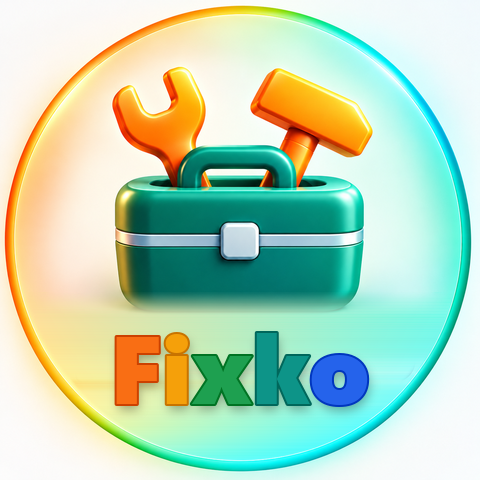

Snap what needs fixing and local pros reply with a time. Free for customers.
Questions or problems: support@remako.si.
In the app (immediate):
Without the app: email support@remako.si with the subject "Delete my Fixko account" and the phone number you used in Fixko. We delete the account within 30 days.
What is deleted: your account, your posts and their photos, phone number, pro profile (name, photo, company, VAT or tax number), offers and ratings about you, and the notification token.
What is kept: if you were a pro on a job a customer already accepted, the job stays visible to that customer without your phone, photo and tax number. Reports of rule violations are kept for 24 months, and data required by tax law for as long as the law requires.
Delete only some data: customers can delete single posts in the app (open the post › Delete request) at any time without deleting the account.
Fixko is a service of REMAKO d.o.o., Ljubljanska cesta 63, 2327 Rače, Slovenia.